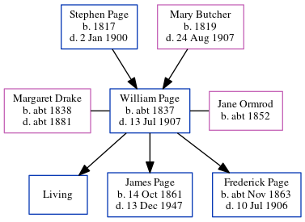

William Richard Page c1837 - 1907
[ Home ] | [ Calendar ] | [ Surnames Index ] | [ Census Index ] | [ Family History ]A bricklayer and the child of Stephen Page (an agricultural laborer) and Mary Butcher, William Page, the first cousin three-times-removed on the father's side of Nigel Horne, was born in Folkestone, Kent, England c. 1837, was baptized there at Ss Mary & Eanswith Church on Nov 19, 1837 was married twice - to Margaret Drake (on Feb 3, 1860 in Folkestone) Jane Ormrod (on Aug 1, 1887 in Ashford, Kent, England, following the death of Margaret c. 1881)4. He had 3 children with Margaret Drake: William Richard, James Henry and Frederick Stephen.
During his life, he was living at his birthplace on Jun 6, 18418; at Sandfield House in Folkestone on Apr 2, 18717; and at 69 Foord Road in Folkestone in 1907.
He died on Jul 13, 1907 at Victoria Hospital in Folkestone1,2,3 and was buried at St John The Baptist, Folkestone on Jul 17, 19075,6.
Parents
- Stephen was born in 1817
- Mary Julia was born in 1819
Children
- James Henry was born on Oct 14, 1861
- Frederick Stephen was born c. Nov 1863
Citations
- England & Wales Government Probate Death Index 1858-2019 - Findmypast
- England & Wales deaths 1837-2007 - Findmypast
- Kent, Folkestone Cheriton Road Cemetery Memorial Inscriptions - Findmypast
- England Marriages 1538-1973 - Findmypast
- Kent, Canterbury Archdeaconry burials 1538-1988 - Findmypast
- England Deaths & Burials 1538-1991 - Findmypast
- 1871 England, Wales & Scotland Census - Findmypast (was age 33 and the head of the household)
- 1841 England, Wales & Scotland Census - Findmypast (was age 3)
Media
William Richard Page - Probate

Kent, Canterbury Archdeaconry marriages 1538-1928 - GBPRS/CANT/M/97000146/1
England Marriages 1538-1973 - R_848276756
England Marriages 1538-1973 - R_848279895
England & Wales deaths 1837-2007 - BMD/D/1907/3/AZ/000221/250
Kent, Canterbury Archdeaconry burials 1538-1988 - GBPRS/CANT/D/95470811
1871 England, Wales & Scotland Census - GBC/1871/0014384649
England & Wales marriages 1837-2005 - BMD/M/1887/3/AZ/000209/008
Kent Baptisms - GBPRS/CANT/B/96147383
England Deaths & Burials 1538-1991 - R_276346650
Kent, Folkestone Cheriton Road Cemetery memorial inscriptions - GBPRS/KENT/MIS00006787
England & Wales Government Probate Death Index 1858-2019 - GBOR/GOVPROBATE/C/1908-1908/00040664
Kent marriages and banns - PRS/KENT/MAR/0012409/1
Family Tree
Generated by ged2site. Last updated on Jun 11, 2024